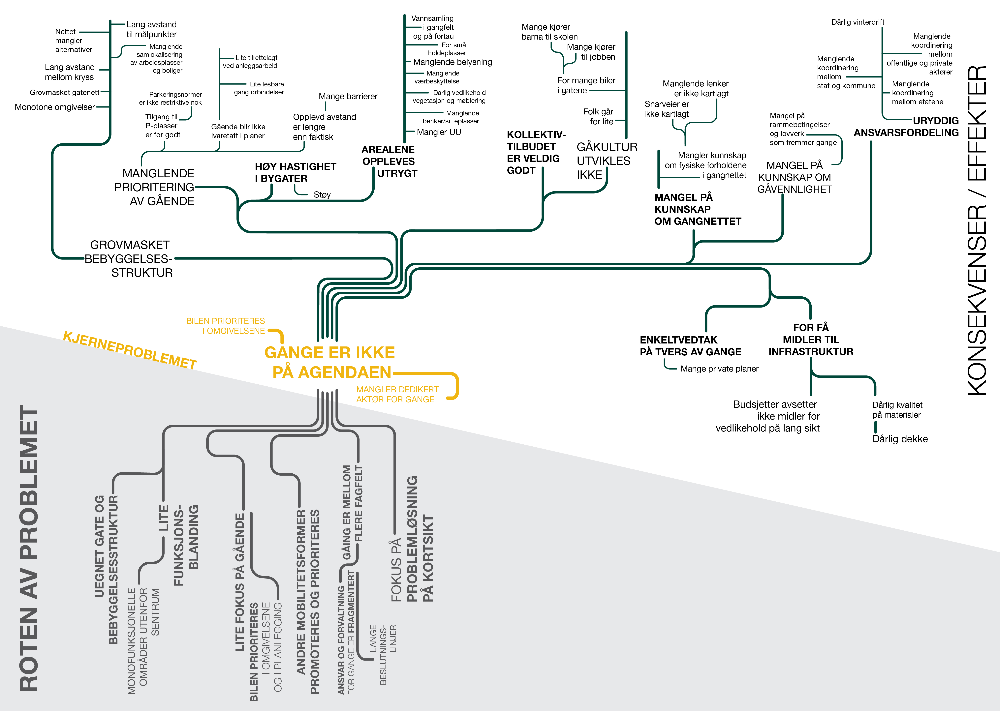
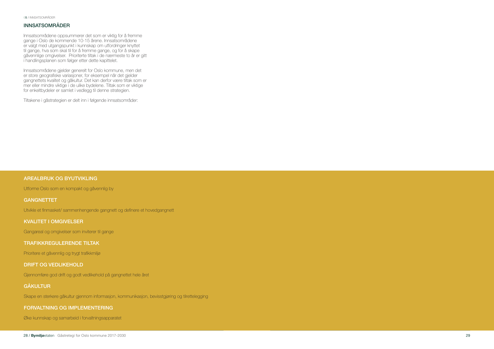

Walking strategy for Oslo
document made for the city of Oslo
The strategy for increasing walking in the city of Oslo was made while working in Rambøll AS, Oslo. I was part of the team working on the strategy, and was responisble for gathering, analysing and representing data. In addition I also did graphic design for the entire document - layout, illustrations, styles.
Document / Report
Illustration
The Finding
One of the main findings was that while everybody speaks and listens to what the public as well as the officials are saying about cycling, walkability or walking at all are not on the agenda for the decision-makers. This of course means that there are no funds allocated for improving walkability, and thus it became one of the important goals in the development of the implementation strategy: put the walking on the political and policy agenda.
The illustration beneath shows the problem tree derived after workshops with stakeholders from the public administration, showing the roots of the problem - causes, the effect of the problems - consequences and not the actual problems, and the core problem - the main issue that has to be adressed in order to mitigate the root problems.
The process
The client had their own visual guidelines to be followed in all documents published by them. This includes color palettes, and font choices. With this set framework, the challenge was to make the publication both recognizable as part of the same series of publications (the client is publishing different strategies and guidelines for the city), and make it distinguishable from the series, so that one knows that it is The Walking Strategy that is being browsed through, or that the figure shown as a part of an officials’ presentation is reproduced from the strategy.
Front and back cover
The publication adheres to the client's design guidelines, only the colors are chosen to fitt the overall publication color. The front cover photo contributes to recognising this particular strategy from the rest, and is chosen for it's orientation and repetition of the elements, as well as for the people depicted walking.

Two-page spread
Pages of the publication are composed as spreads, with matching colors, and composition stretching across both page. This particular spread focuses on the priorities of the strategies - the rest of the chapter is dominantly yellow, and this is the most important information in the chapter, thus the color accent and spread.
Explaning and parsing priorities
Each of the priorities is explained and further decomposed into a set of measures. The imagery gives a clue about the content of the priority, and whether it is a physical or an organizartional measure.

Defining the goals
Goals are described and an assessment is done. The column on the left gives an overview of the data the goal refers to, as the basis for defining the goal itself.

Choosing a color palette
A series of color palettes were explored in order to distinguish the Walking strategy as a specific and separate document, and make the figures that are likely to be reproduced in different arenas (other reports, official's presentations, etc) as specific to Walking startegy as possible. The client decided finally on using their standard color palette, but other graphic elements used across figures (pictograms, fonts) stay unique to this startegy.
Example of the figures combining data
The data is based on Reisevanneundersøkelse, or Mobility survey for Oslo. These data were further processed and combined in order to show data of specific importance for the goals defined within the Walking Startegy. This example shows the percentage of trips lasting for 5, 10, 20, 30min or more, for the whole city (large figure) and districts of the city separately.
Depicting important walkability concepts
In order to explain some of the concepts visually, in order to make the connections between these obvious. General Theory of Walkability’s conditions for increasing walkability: simple, useful, safe, comfortable and interesting - blossoming into the benefits to the society - social, environmental, health and economic benefits.